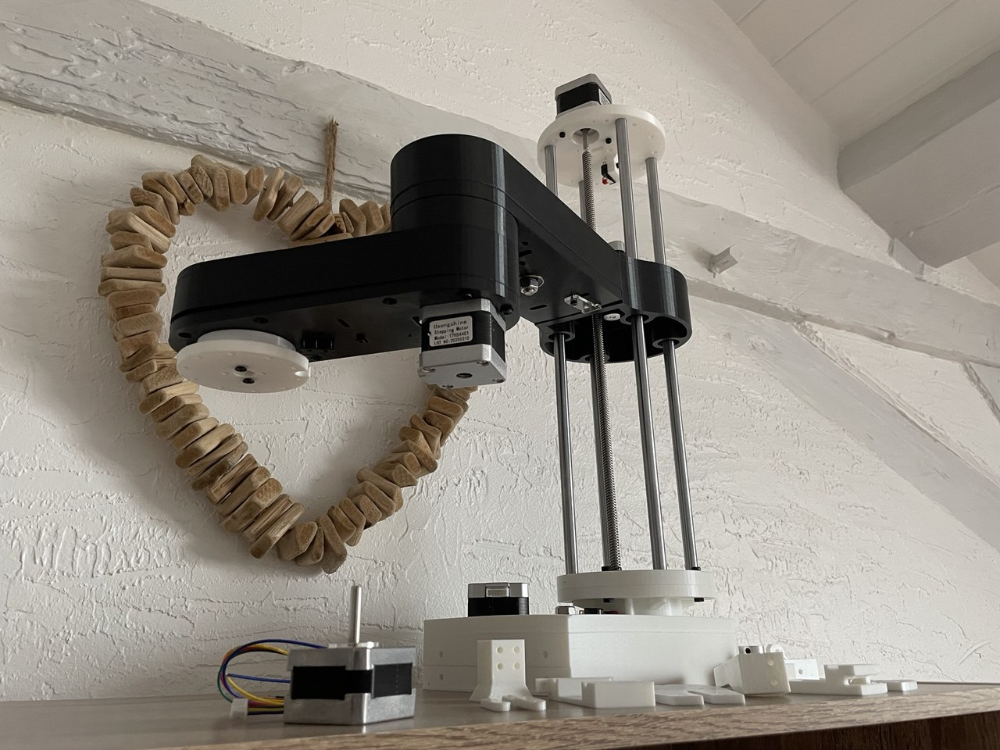
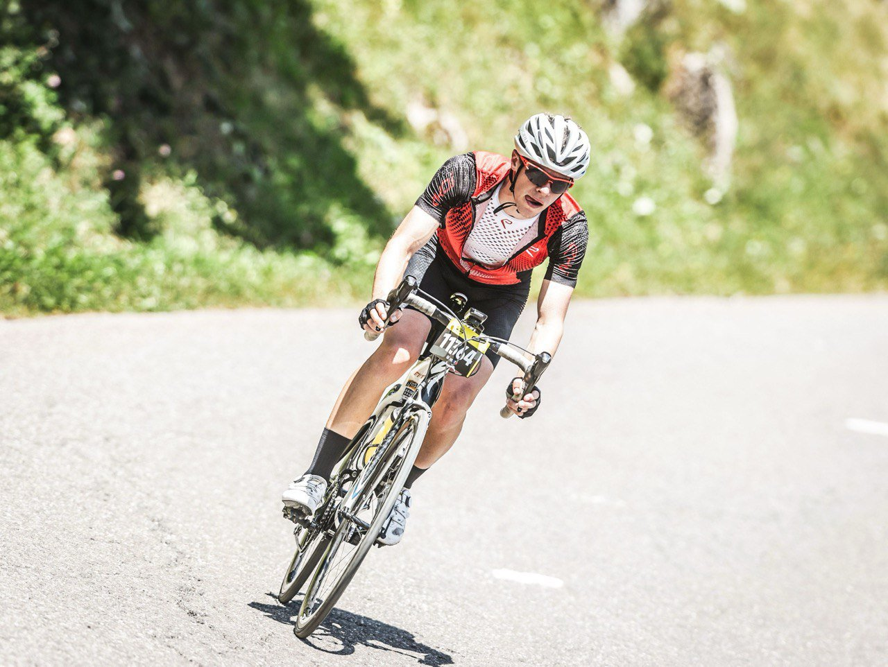
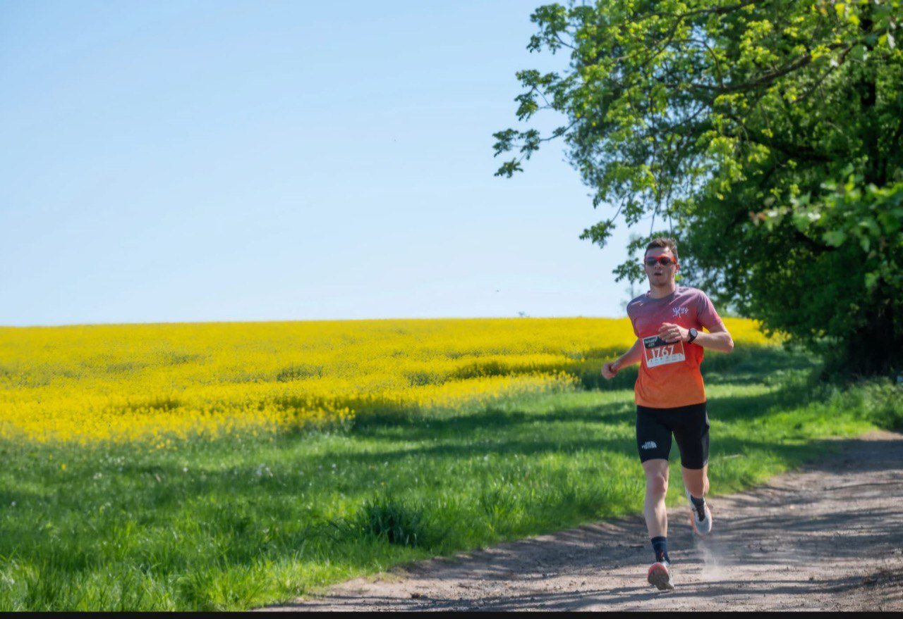
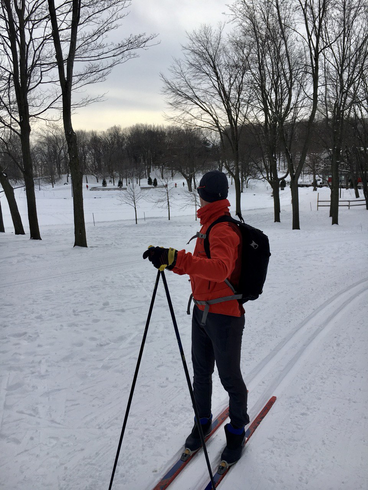
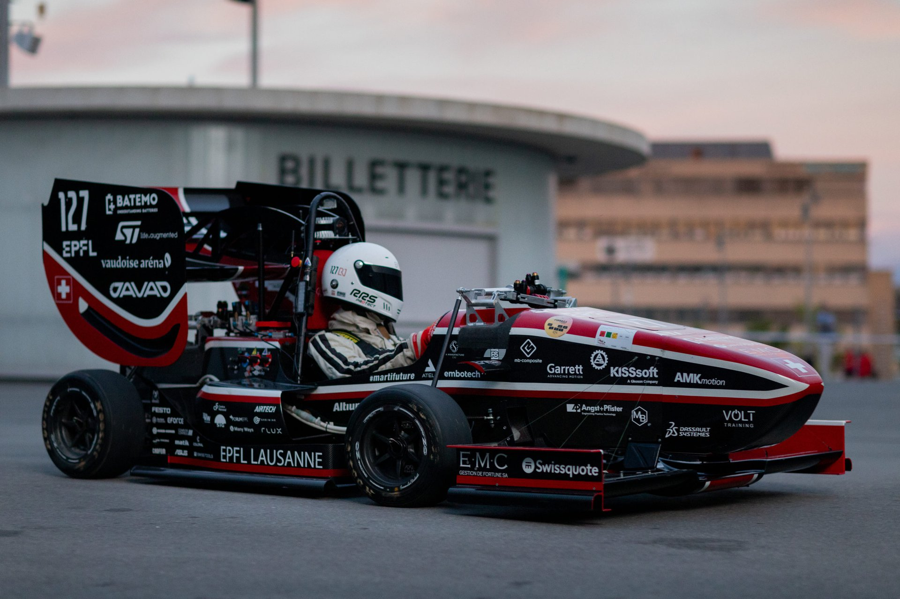

My story
from what I love to what I want
A multidisciplinary journey driven by automation and real-world impact.
A multidisciplinary journey driven by automation and real-world impact.

This page tells my professional journey from academic foundations to my current job search.
Through the lens of building an automated robotic arm, I'll show how my multidisciplinary background has prepared me for real-world engineering challenges.
My journey began with a desire for precision, which led me to microengineering, a field renowned for its diverse range of subjects. This diversity isn't just academic; it defines who I am. Sports and music are perfect examples of this multidisciplinary approach, where precision meets creativity across different domains.

Cycling
Running
SkiingCoordination & precision
At 18, I fought to explore another continent during Covid. From Canada's East Coast to Mexico, I discovered new cultures, sports, and ways of thinking. Returning home, I channeled this openness into helping others through teaching and solidarity events.
20 km of Balexert, accompanying children with disabilities
Raised funds for breast cancer awareness

Starting my robotics master's at EPFL, I needed concrete application. I joined EPFL Racing Team to design an electric and autonomous race car — my first pseudo-professional experience where academic knowledge meets real-world engineering challenges.
State estimation & control systems
Sept 2022 - Sept 2023 Python
Python
 PyTorch
PyTorch
 OpenCV
OpenCV
 Matlab
Matlab
Completing my academic journey, I've built strong programming and analytical skills. Beyond coursework, I developed essential human skills through customer relations at Leroy Merlin during summer work — balancing technical expertise with real-world interaction.
Developed through customer interaction
Service Technician · Summer 2019
Diagnostics & customer contact in retail environmentDeep learning for industrial esthetics control
Enhancing synthetic image generation quality
With my studies completed, I can now build my robotic arm at home using all the skills I've acquired. But I'm also developing new ones — this portfolio itself demonstrates my commitment to learning and clearly communicating my story.